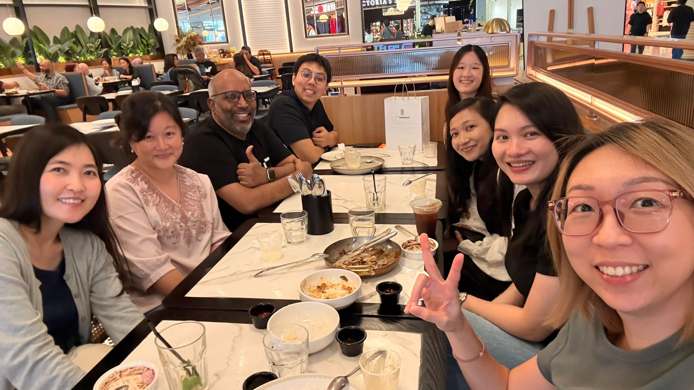
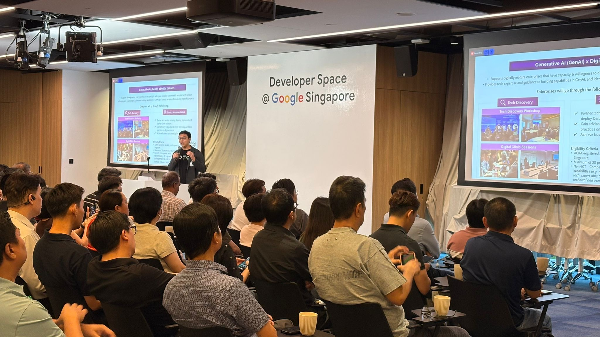
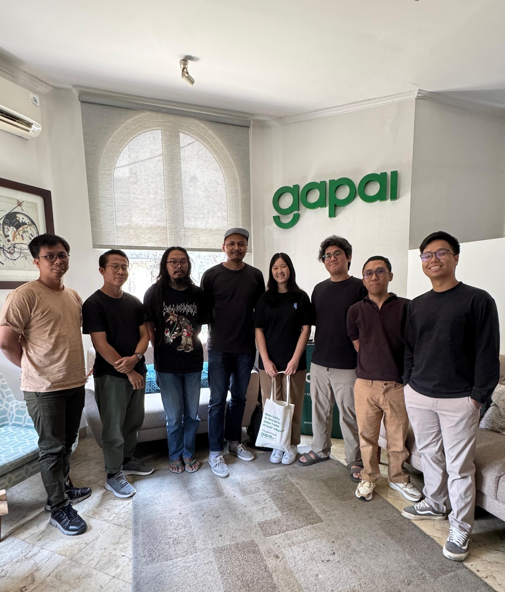
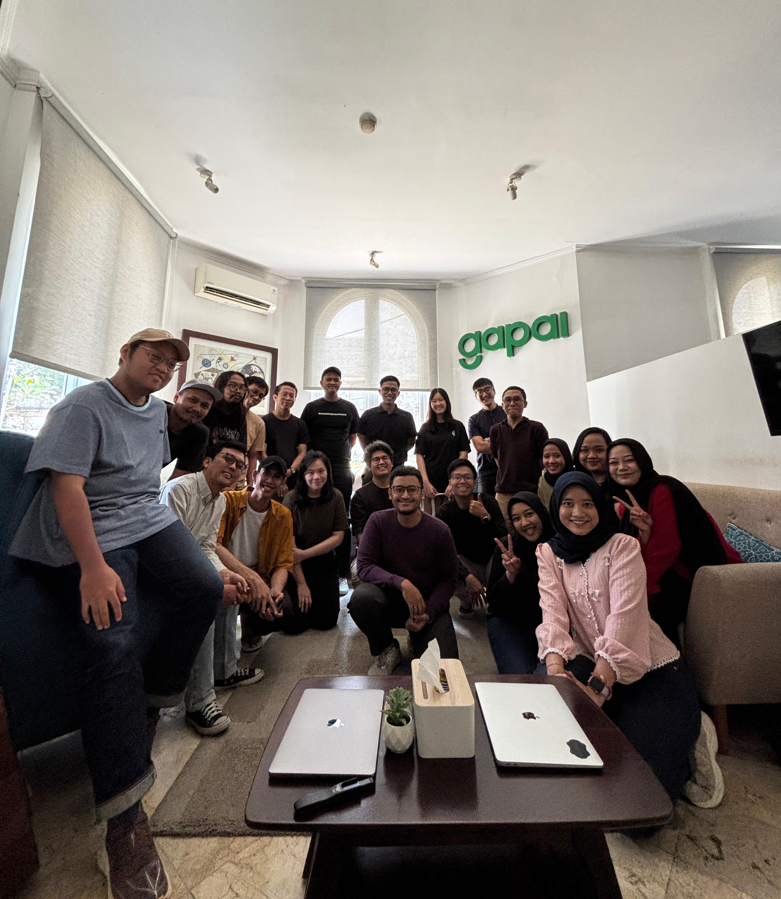
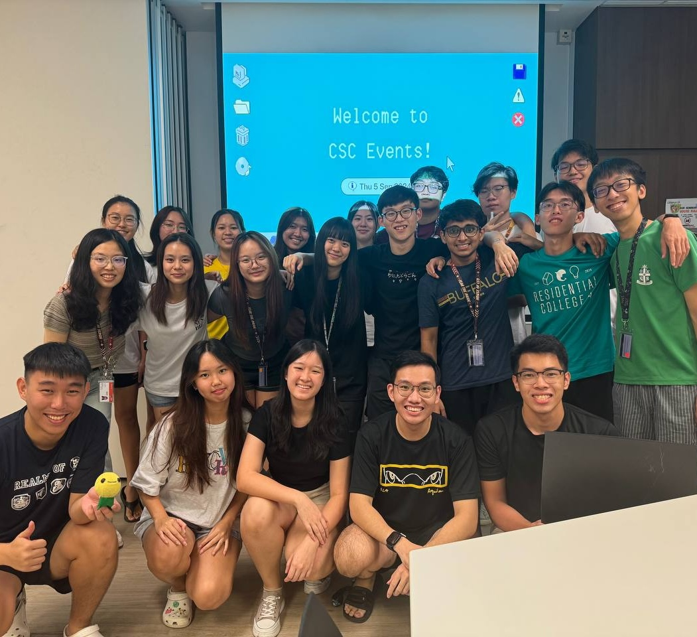
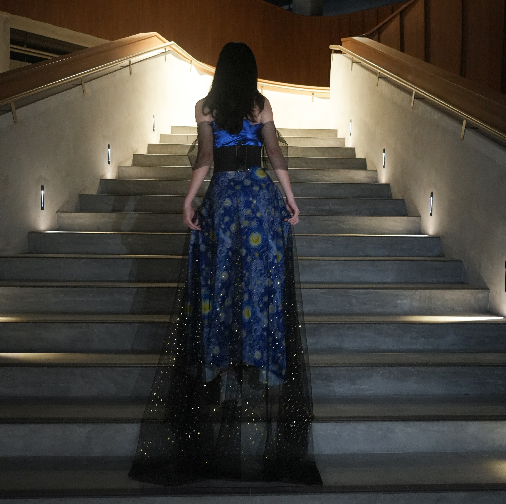
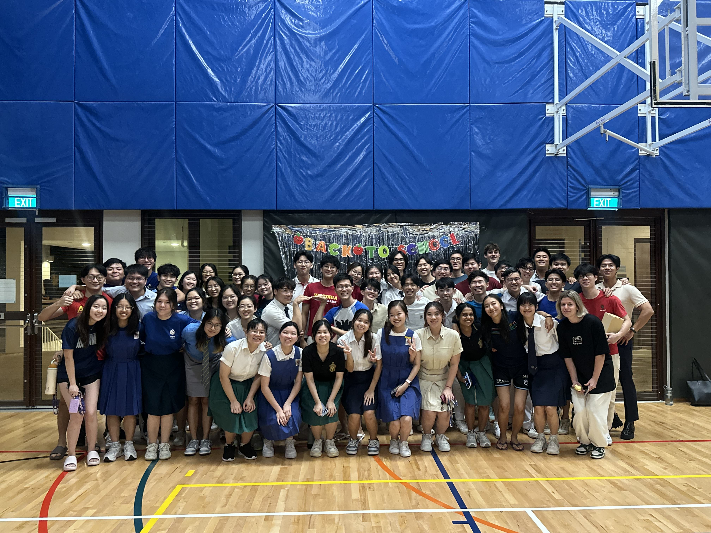
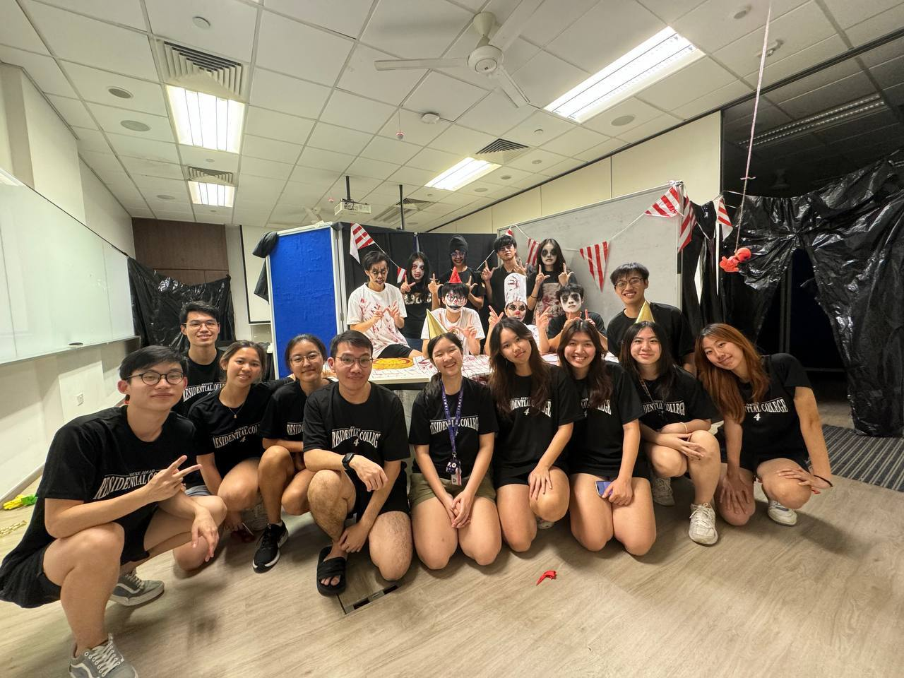
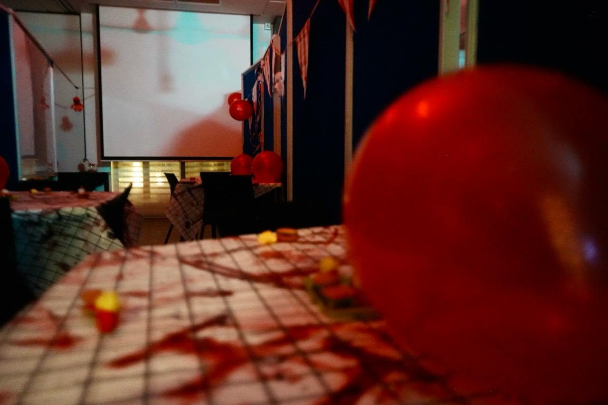
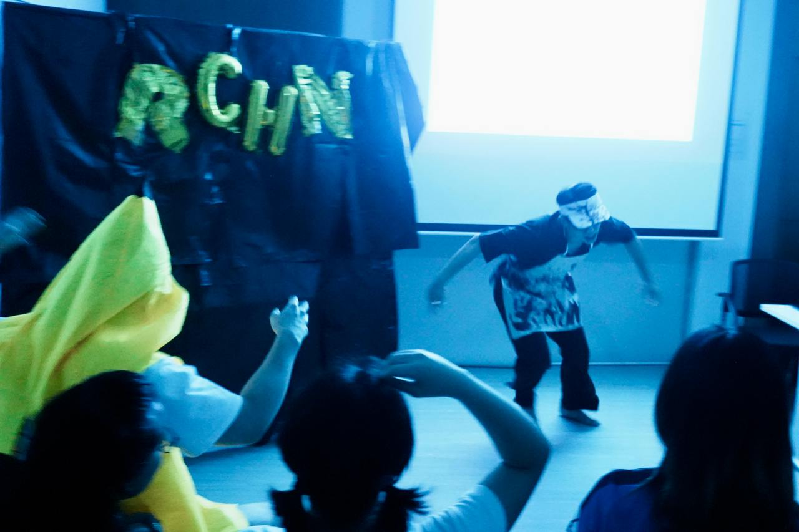

Work Experience
AI Product Management Intern @ Manulife

During my internship as an AI Product Management Intern at Manulife, I worked within the Product Business Division, where I supported the development of AI-powered solutions and workflows to improve efficiency across the product development process. My role involved working closely with business users, technical consultants and stakeholders from different departments to identify suitable automation opportunities, define requirements and develop practical AI solutions.
One of my main responsibilities was leading an AI product initiative focused on automating manual tasks within product development. I identified and evaluated more than seven potential AI automation use cases, assessing their expected business impact, technical feasibility and scalability. These use cases included document comparison tasks, where product teams needed to ensure that information remained consistent across product specifications, policy contracts, product summaries and PowerPoint reports prepared for stakeholders.
Each use case involved a business owner from the relevant function and a technical consultant who provided guidance on potential tools and implementation approaches. I coordinated the progress of these use cases by working with the respective owners to define their requirements, scope possible solutions, schedule discussions and track timelines. I also prepared project updates and helped ensure that each use case remained aligned with the broader objectives of the AI initiative.
Beyond project management, I was involved in the solutioning and testing process. I worked with the technical team to explore different approaches for developing AI agents and automated workflows using tools such as Microsoft Copilot Studio, Copilot Cowork and Python. This included testing agents, refining their skills and instructions, configuring connections, and evaluating whether the workflows could reliably support the intended business processes. I also helped facilitate communication between business and technical stakeholders by translating technical concepts into clearer, more practical terms and ensuring that business requirements were accurately conveyed to the technical team.
Another important aspect of my role was supporting the governance and implementation process. I helped keep project documentation up to date so that the wider product function could understand and benefit from the solutions developed. I also contributed to the model evaluation process and assisted with obtaining the necessary approvals before the AI workflows could be used more broadly. This gave me a better understanding of the importance of responsible AI development, particularly when implementing AI solutions within a large financial services organisation.
Overall, this internship gave me valuable experience at the intersection of product management, business analysis and AI implementation. It strengthened my ability to manage projects involving multiple stakeholders, translate business needs into technical requirements and evaluate the feasibility of emerging technologies. More importantly, it showed me that successful AI adoption requires not only capable tools, but also careful scoping, effective communication, rigorous evaluation and close collaboration between business and technical teams.
Strategic Digital Projects Intern @ IMDA
Strategic Digital Projects Intern
IMDA
Jan 2026 - Jun 2026

During my internship with the Infocomm Media Development Authority (IMDA), I worked in the Strategic Digital Projects team, which oversees grant programmes supporting AI adoption and collaboration between technology service providers and local companies in Singapore. Working at the intersection of government, technology providers and enterprises gave me valuable insight into how AI initiatives are evaluated, supported and translated into practical business applications.
One of my key projects was scoping and designing an AI demonstration suite to help enterprise teams better visualise how AI solutions could address their specific business needs. The team had identified that, during consultations, company representatives sometimes found it difficult to imagine what a potential AI solution would look like in practice. To address this, I developed a workflow using AWS PartyRock and Base44. Team representatives could input a company’s use case into a dynamic PartyRock form, which would generate a concise solution summary and a prompt that could then be copied into Base44 to create a working prototype. This allowed companies to move more easily from discussing an idea to seeing how it might be implemented.
I also supported the team’s evaluation of AI service providers. We regularly conducted software demonstration sessions to understand the solutions offered and assess their suitability for common enterprise needs, such as document processing, process automation and customer engagement. After participating in several of these sessions, I created a structured question guide and evaluation rubric for the team to use when assessing future providers. The framework considered factors including the solution’s guardrails, alignment with our broad use cases, customisation capabilities, compatibility with existing platforms, user autonomy and suitability for different grant programmes, including shorter-term quick-win initiatives.

The internship also gave me the opportunity to attend industry events hosted by organisations such as Google, Amazon, Apple and Snowflake. Through demonstrations, technical clinic sessions and discussions on business use cases, I gained a broader understanding of how different technologies are being integrated into AI solutions and the types of challenges they can help businesses address. I also gained a deeper appreciation of the role that government agencies can play in connecting enterprises with suitable technology partners and supporting the adoption of emerging technologies.
Overall, my internship at IMDA strengthened my ability to understand business problems, evaluate technology solutions and design practical approaches for different stakeholders. It also developed my skills in research, structured analysis, stakeholder communication and project execution. Most importantly, the experience gave me a clearer perspective on how AI adoption involves more than just developing technology—it also requires identifying meaningful use cases, building user confidence and creating the right support systems for organisations to implement change.
Software Engineer Intern @ Gapai
Overseas Internship Experience
Gapai
Jul 2025 - Dec 2025
Jakarta, Indonesia
Interned as a Software Engineering Intern (Front-end) in Jakarta as part of the NUS Overseas Colleges (NOC) Program

During my six-month overseas internship with Gapai under the NUS Overseas Colleges Indonesia programme, I had the opportunity to work as a front-end software engineering intern in Jakarta. Gapai is a start-up that connects locals with overseas job opportunities, and as part of the small, dynamic team of about 25 members, I was able to contribute meaningfully while also gaining a close understanding of how each department in a start-up functions.
In my role, I worked on both independent projects and smaller UI enhancements following internal audits. One of my most notable projects was developing a testing environment for Gapai’s new AI Interviewer product. This environment enabled the entire company to test the product simultaneously, allowing us to evaluate concurrency and performance under load. It was rewarding to see colleagues across the company use a system I built, and to know that my work directly supported the product’s development.
Another key contribution I made was implementing a tracking system for the AI Interviewer. This system monitored and logged issues such as connection drops, focus loss when users switched applications, and agent buffering errors. By capturing this data, the team was able to better understand user behaviour and identify areas for product improvement.

Beyond the technical experience, I truly valued working in a start-up environment where transparency and collaboration were integral. Monthly company-wide meetings allowed every department to share updates, giving me a broader perspective of the business as a whole, which is something I might not have experienced in a larger organisation.
Living in Jakarta also enriched my experience immensely. Alongside my internship, I took classes at Universitas Indonesia on business feasibility studies, where I connected with peers who had innovative ideas for the rapidly developing Indonesian market. I also explored the city’s vibrant start-up scene through events and competitions, and immersed myself in the culture by learning conversational Bahasa Indonesia, which was widely used both in the workplace and in daily life.
This internship was truly a unique experience that allowed me to develop both technical and soft skills. It strengthened my ability to work in a fast-paced, resource-constrained environment, improved my adaptability, and gave me invaluable cross-cultural exposure. I believe the skills and perspectives I gained during this time will continue to shape my growth and contribute positively to my future career.
Project Director @ RC4
Project Director
Residential College 4
May 2024 - Feb 2025
Singapore
Served as a Project Director for various events at Residential College 4 (RC4), overseeing planning, coordination, and execution to ensure successful outcomes

During my time at RC4, I took on multiple leadership roles and directed three major college-wide events: Arts Night Runway, Informal Dinner, and Residential Colleges Horror Night. Each one pushed me in different ways, but they were all really rewarding experiences.
Arts Night Runway
Arts Night is our annual showcase for music, dance, and theatre, and as Head of the Fashion and Sewing Club, I got to create and direct a fashion runway segment. It was hectic pulling everything together on a tight timeline, from coordinating models, sewers, designers, and the main event committee, to finishing my own design, but seeing it all come together on stage made the stress worth it.
Informal Dinner
This is a biannual themed dinner for residents, and I directed a Back to School edition for around 350 people. I worked with many different groups: my own events committee, dining hall staff, performers, sound engineers, and college staff. Even when we hit a few technical hiccups, the event ran smoothly and was praised by residents for its nostalgic theme, performances, and immersive atmosphere.





Residential Colleges Horror Night
This was the biggest event that I had ever directed. As a collaboration between all 5 residential colleges with about 1,000 attendees, it was a daunting event to take up. I oversaw RC4’s haunted house while also coordinating with the other colleges to make sure everything ran safely and on theme. I also introduced two new systems that helped streamline operations and improve safety:
1. A Telegram queue system, so people didn’t have to stand in long physical lines without knowing if they’d even get to go into the haunted houses.
2. A two-part haunted house design for our RC4 house, which made the experience faster without losing the scares. More people could go through, more scare actors could be involved, and feedback was much better than in past years.
Overall, these events taught me a lot about leading teams, handling logistics, and coming up with creative solutions under pressure. It was stressful at times, but the energy on the event day and the positive feedback from residents and committee members made it all worth it.